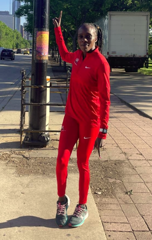
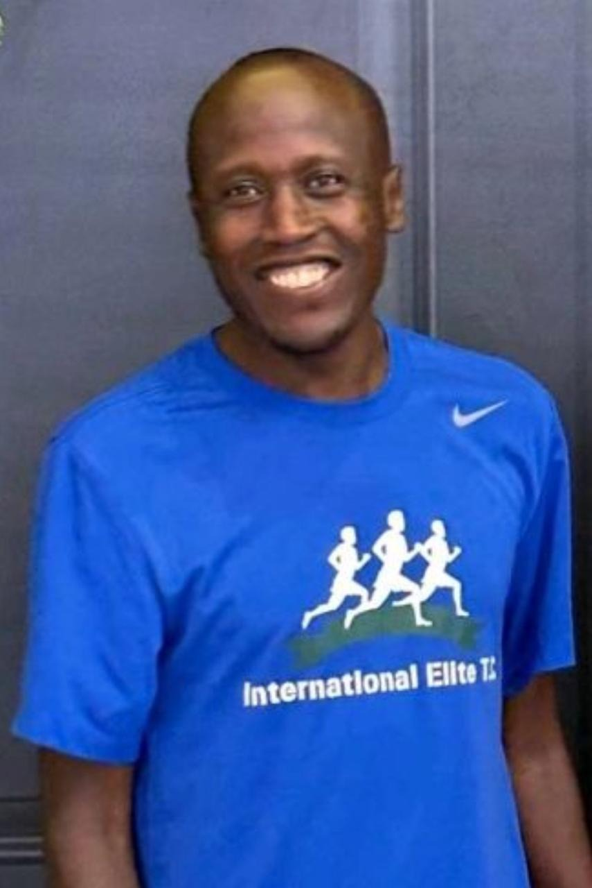
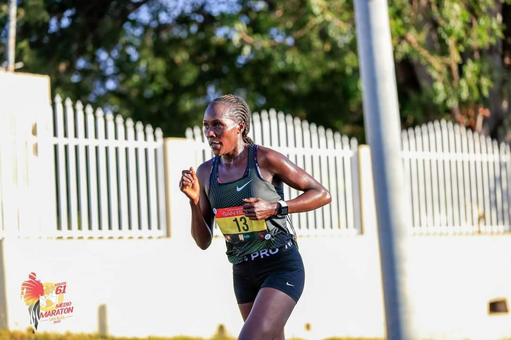

Joyline Chemutai
Profile
Home: Kericho, Kenya
Date of Birth: 31/12/1994
Coach: Kiplangat Ngeno
Personal Bests
10K: 31:57 (2022)
21K: 1:09:44 (2023)
Race Results Highlights
2023
- United Airlines NYC Half Marathon, 1:09:44, 6th place
2022
- RNR San Jose Half Marathon, 1:11:22, 5th place
- Cherry Blossom 10 Mile, 52:21, 3rd place
- Peachtree 10K, 32:29, 5th place
- Cooper River Bridge 10K, 31:57, 6th place
- B.A.A. 10K, 32:00, 9th place
- Credit Union Cherry Blossom 10M, 52:21, 3rd place
2021
- Beach to Beacon 10K, 32:06, 7th place
- Cooper River Bridge 10K, 32:10, 5th place
- Monument Avenue 10K, 32:15, 2nd place
- Utica Boilermaker 15K, 51:58, 5th place
2019
- Cherry Blossom 10M, 53:03, 6th place
- Beach to Beacon 10K, 31:56, 3rd place
David Kiprotich Bett
Profile
Home: Kericho, Kenya
Date of Birth: November 14, 1997
Coach: Julius Kirwa
Contact: International Elite T. C.
Keith Olson: (310)849-6639
Email: internationalelitetc@gmail.com
Personal Bests
800m: 1:44.2 (2017)
1500m: 3:31.5 (2019)
3000m: 7:35.6 (2021)
5000m: 12:55.6 (2021)
Accomplishments
Represented Kenya at 2018 Commonwealth Games
Ranked #1 in the world, 2010, 5000m, U20
Ranked #2 in the world, 2009, 5000m, U18
Dennis Kipkosgei
Profile
Home: Nakuru, Kenya
Date of Birth: December 20, 1994
Current World Athletics Ranking: 197
Contact: International Elite T. C.
Keith Olson: (310)849-6639
Email: internationalelitetc@gmail.com
Personal Bests
10km: 28:39 (2022)
15km: 46:40 (2018)
10mi: 46:13 (2021)
21km: 1:03:23 (2022)
Race Results Highlights
2022
- RnR San Jose Half Marathon, 4th, 1:03:33
- Cooper River Bridge Run 10K, 28:43, 5th place
- Broad Street 10 Mile, 46:41, 4th place
- Brooklyn Half Marathon, 1:04:00, 2nd place
- RnR Atlantic City Half Marathon, 1:04:21, champion
2021
- Broad Street 10 Mile, 46:13, champion
- Norcross Run 10K, 29:26, champion
- Rib Run 10K, 29:05, 4th place
2019
- Mini-Indy Half Marathon, 1:05:44, 2nd place
- B.A.A. Half Marathon, 1:05:20, 16th place
2018
- Tulsa Run 15K, 46:40, 2nd place
- Youngstown Peace Race 10K, 28:52, champion
- Virginia 10 Mile, 49:44, 6th place
- Crim 10 Mile, 48:55, 5th place
Dominic Korir
Profile
Residence: Kericho, Kenya
Date of Birth: May 12, 1993
Coach: Willy Lagat
Contact: International Elite T. C.
Keith Olson: (310)849-6639
Personal Bests
10km: 28:08 (2019)
12km: 35:09 (2019)
15km: 43:17 (2020)
10mi: 46:45 (2017)
21km: 1:01:45 (2020)
Race Results Highlights
2022
- Monterey Bay Half Marathon, 1:03:05, 4th place
- RnR Half Marathon San Jose, 1:03:02, 3rd place
- RnR Half Marathon San Antonio, 1:04:34, champion
- Ice Breaker 5M, 23:38, 2nd place
- Bolder Boulder 10K, 30:44, 8th place
- Peachtree 10K, 29:58, 17th place
- Cooper River Bridge 10K, 28:51, 8th place
- Lincoln Half Marathon, 1:03:53, champion
- Mini-Indy Half Marathon, 1:04:11, 3rd place
2021
- Philadelphia Distance Run, 1:02:48, 2nd place
- Cherry Blossom 10miler, 47:30, 6th place
- Cooper River Bridge 10K, 29:11, 7th place
- Cotton Row 10K, 29:23, champion
- Lincoln Half Marathon, 1:03:45, course record and champion
- Gum Tree 10K, 29:13 2nd place
- Fresh 15K, 45:05, 3rd place
2020
- Houston Half Marathon, 1:01:45, 17th place
- Miami Half Marathon, 1:03:52, champion
- Mercedes Half Marathon, 1:02:54, 2nd place
- Fresh 15K, 44:05, 2nd place
2019
- Azalea Trail Run 10K, 28:34, champion
- Cooper River Bridge 10K, 28:08, 3rd place
- Crescent City Classic 10K, 28:28, 3rd place
- UAE Kidney 10K, 28:14, 4th place
- Cleveland Rite Aid 10K, 29:17, champion
- Lilac Bloomsday 12K, 35:09, 5th place
- Cotton Row 10K, 29:36, champion
- B.A.A. 10K, 28:48, 6th place
- HAP Crim 10miler, 47:04, 3rd place
- Virginia 10miler, 47:43, 3rd place
- B.A.A. Half Marathon, 1:02:44, 4th place
- Columbus Half Marathon,1:02:17, 2nd place
2018
- Cleveland Rite Aid 10K, 29:26, 3rd place
- Pittsburgh 10miler, 47:12, 3rd place
- San Diego Half Marathon, 1:02:59, 2nd place